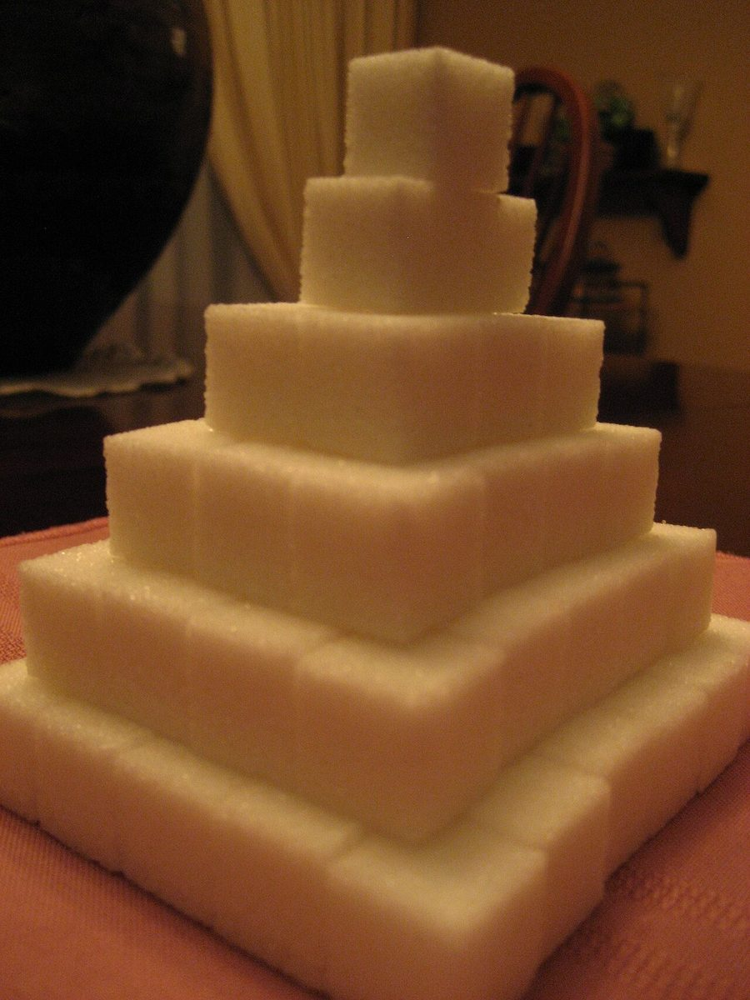

ブローとドローの十穴 — ハーモニカの一本の筒を、5つの穴に区切って
1S↑2C↓3A↑4L↓5E↑
尾鷲市宮ノ上町の Cafe Scale。営業時間やメニューは準備中です。最新の情報は Instagram でどうぞ。

↑ 吹く / 1番穴
このサイトの見かた
ハーモニカは、同じ穴でも「吹く」と「吸う」で音が変わります。このサイトの5ページを、その5つの穴に見立てました。上矢印のページは吹く側、下矢印のページは吸う側です。
※ これは制作側の連想によるデザインテーマで、お店の理念・由来とは無関係です。
↓ 吸う / 2番穴
素材のクローズアップ(イメージ)




どれもフリー素材のイメージ写真です。お店の写真は、ご提供いただいたものに差し替えます。
↑ 吹く / 3番穴
お店の基本情報
| 店名 | Cafe Scale |
|---|---|
| 所在地 | 〒519-3663 三重県尾鷲市宮ノ上町５−１１ |
| 電話 | 0597-22-5258 |
| 営業時間 | 準備中 |
| 定休日 | 準備中 |
| メニュー・価格 | 準備中 |
| 予約・駐車場 | 準備中 |
| @cafe_scale |
ご案内できる内容が分かり次第、こちらに掲載します。